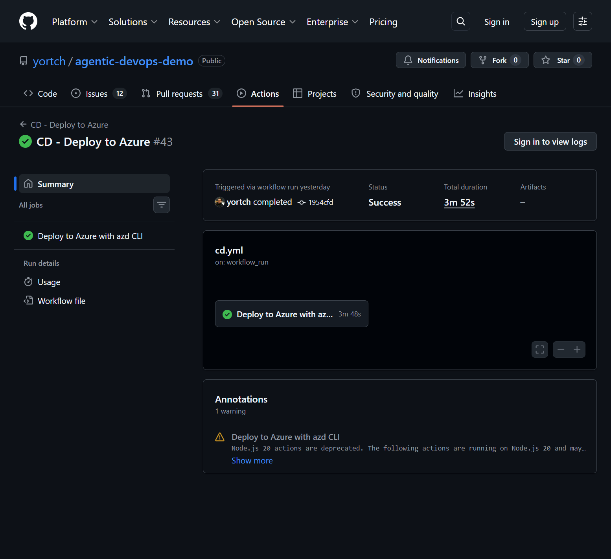
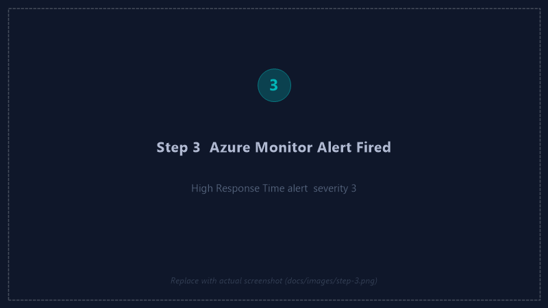
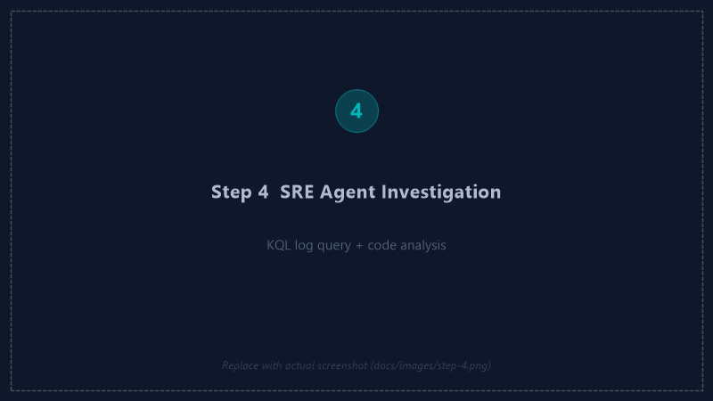
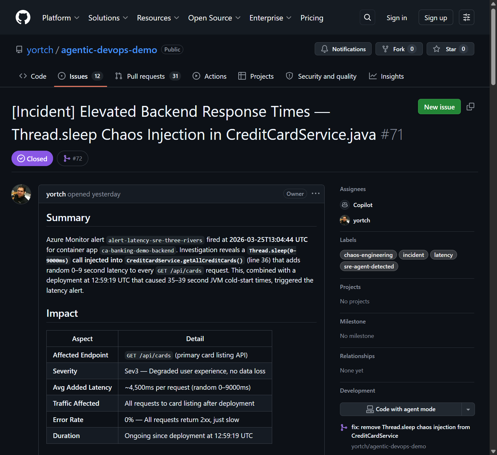
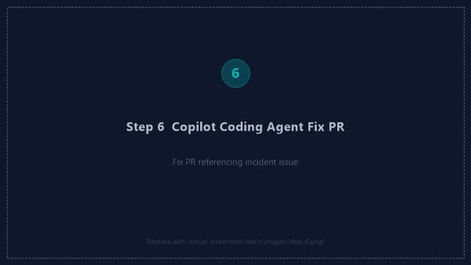
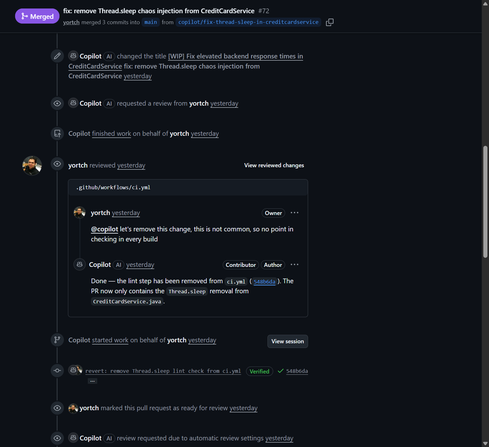
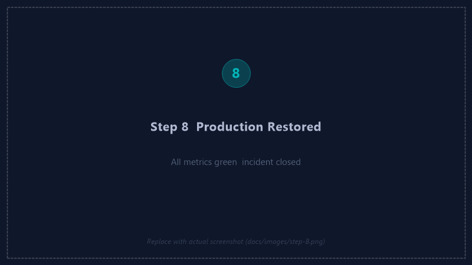

Click or press Esc to close
A full-stack Credit Cards demo app built, deployed, and operated entirely by AI agents — from first line of code to autonomous incident response.
The software industry has embraced AI-assisted development — but we often forget the Ops side. This repo demonstrates Agentic workflows across the full SDLC: from writing code with GitHub Copilot, to deploying with Copilot CLI, to autonomous incident response with Azure SRE Agent.
With Azure SRE Agent, you can fully automate incident detection, investigation, and remediation. By the time you page your on-call SRE, the agent will already have a root cause analysis and a Copilot Coding Agent will have implemented a fix — ready for human review and merge.
Development
Three Rivers Bank was conceived, designed, coded, tested, and deployed without a single line written by hand. Three complementary Copilot tools handled every phase of development.
The foundation. Copilot's inline completions and chat suggestions powered every file — from Spring Boot entities and React components to Terraform modules and GitHub Actions workflows.
The operational backbone. Used throughout the entire project lifecycle to drive infrastructure, troubleshoot deployments, and orchestrate the Azure SRE Agent setup — all from the terminal.
azd project configuration and preprovision hooksMicrosoft.App/agents)The closer. When Azure SRE Agent detects an incident and files a GitHub Issue with full root cause analysis, Copilot Coding Agent picks it up autonomously — reads the issue, authors the fix, and opens a PR.
@copilotThe Application
A real-world full-stack Credit Cards demo app with Spring Boot backend, React frontend, and Azure Container Apps hosting — complete with CI/CD, health checks, and BIAN API v13 integration.
Operations
Azure SRE Agent is an AI agent that monitors your application 24/7, correlates logs and metrics with source code, performs root cause analysis, and proactively routes fixes to the right agent — all without human intervention.
incident-handler subagent.
code-analyzer subagent
queries KQL logs, reads container metrics, then cross-references the
source code to pinpoint the exact file and line that caused the incident.
incident-handler subagent creates a structured GitHub Issue with
incident summary, affected metrics, error traces, root cause, and a fix
recommendation — then assigns it directly to @copilot.
Running continuously — no alert required to investigate.
| Task | Schedule | What it checks | On issue found | Status |
|---|---|---|---|---|
| three-rivers-health-check | Every 30 min | Backend/frontend health, error rates, response time, container restarts | Escalates to code-analyzer + incident-handler |
Active |
| three-rivers-config-drift | Every 6 hours | Env vars, container resource limits, image versions vs. expected | Creates GitHub issue via incident-handler |
Active |
| daily-reliability-report | Daily 8am UTC | 24h metrics summary, 7-day degradation trends, PR correlation | Reliability recommendations posted to GitHub | Active |
The Heart of Agentic DevOps
Watch how a breaking change introduced in production triggers a fully automated pipeline: chaos → detection → RCA → fix → recovery. Humans only review the PR.
chaos-engineering.lock.yml) autonomously
selects a chaos scenario, modifies the target file to introduce a realistic
bug, and
opens a PR with a plausible commit message. Once merged, CI/CD deploys the
broken code to Azure Container Apps.
main.
azd up runs Terraform to apply infrastructure changes and deploy
updated container images to Azure Container Apps. The defect is now live.
Load continues arriving — errors begin accumulating.


incident-handler subagent wakes up and delegates deep analysis
to code-analyzer. It queries ContainerAppConsoleLogs via KQL,
reads container metrics, then cross-references the GitHub repository to find
the exact commit and code change that caused the degradation. Average time to
root cause: < 2 minutes.

sre-agent-detected and assigned to @copilot.




GitHub Agentic Workflows
GitHub Agentic Workflows (gh-aw) compile natural-language
.md prompt files into locked workflows. The chaos engineering
workflow uses this to autonomously inject app-breaking changes via PR
— simulating how real defects slip through to an environment.
api.github.com and api.githubcopilot.com
are permitted. All other outbound traffic is blocked. Safe outputs (like
create-pull-request) are gated with a maximum of 1 PR per run.
Get Started